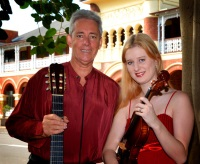

Townsville Music Center
Townsville Music CenterHarbourside Duo
Music of Debussy, Ravel, Saint-Saens, sibelius and others. March into Sommarhagen!
Be seduced by Thais! Or just relax and let the music wash over you.
2PM Sunday, 17th May at C2 (Townsville Civic Theatre)
$25 Adult - $20 Concession - Children 12 and under get in free!.
Tickets are available at:
- www.ticketshop.com.au
- Phone: 4727 9797
- Townsville Civic Theatre
- Riverway Arts Center
Harbourside Duo
Music of Debussy, Ravel, Saint-Saens, sibelius and others. March into Sommarhagen!
Be seduced by Thais! Or just relax and let the music wash over you.
2PM Sunday, 17th May at C2 (Townsville Civic Theatre)
$25 Adult - $20 Concession - Children 12 and under get in free!
Tickets are available at:
- www.ticketshop.com.au
- Phone: 4727 9797
- Townsville Civic Theatre
- Riverway Arts Center